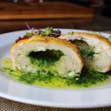

Chicken a la Kiev
Ingredients
- 8 skinless, boneless chicken fillets
- 225g dried breadcrumbs
- 75g parmesan, grated
- 5 eggs, beaten
- 100g plain flour
- pinch paprika
- 4 tbsp sunflower or vegetable oil, for frying
- For the garlic butter
- 4 garlic cloves, crushed
- 2 tbsp finely chopped parsley
- 200g butter, softened
- juice ½ lemon
Preparation
- Place all the garlic butter ingredients in a bowl and season well. Mash with a fork until well combined,
shape into two sausages using cling film to help you shape it, then tightly wrap and chill or freeze until
really firm. Can be made up to 3 days in advance. When firm, slice each into 8 even pieces.
- Lay a chicken breast on a chopping board and use a sharp knife to make a deep pocket inside the breast. The
easiest way is to push the point of a knife into the fat end, keep going halfway into the fillet. Be careful
not to cut all the way through or the butter will leak out when cooking. Repeat with the remaining breasts.
Push 2 discs of butter inside each chicken breast, press to flatten and re-seal with your hands. Set aside.
- Mix the breadcrumbs and Parmesan on one plate, and tip the eggs onto another. On a third plate, mix the
flour with paprika and some salt. Dip each breast in the flour, then the egg and finally the breadcrumbs,
repeating so each Kiev has a double coating (this will make them extra crisp and help to keep the butter
inside). Chill for at least 1 hr before cooking, or freeze now – see tips, below.
- To cook, heat oven to 180C/160C fan/ gas 4. Heat the oil in a large frying pan over a medium-high heat. Fry
the Kievs for 2-3 mins each side until golden – you may need to do this in batches. Transfer to a baking
tray and cook for 20-25 mins until cooked through.